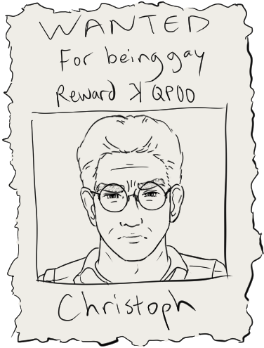
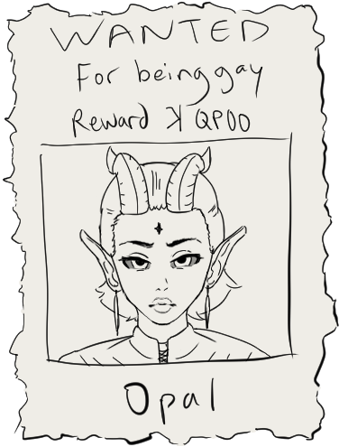
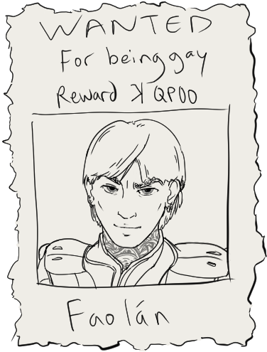
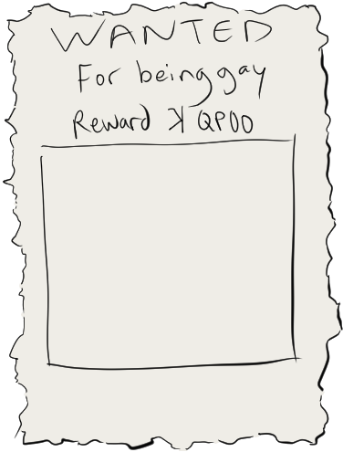
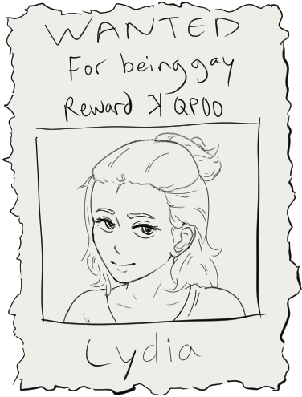
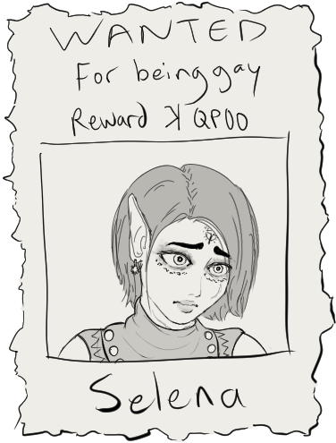

Characters
The people you should be rooting for. Or not.
Jump to a character
Main Characters
ChristophDoctor. Human. Wears glasses.  Full Name: Christoph Senft Age: 41 Place of Birth: Zahnfurt-Hagen, Eberplatz Race: Human Archetype: Doctor Affiliation: Cornerstone Institute of Health Sciences (alumnus), Guild of Medicine (aspiring) Likes: Tea, bread, whittling, pottery, antiques Dislikes: Dogma, superstition, drunkards, fish, gossip Bio: Most of the world's problems can be solved through logic and reasoning, at least according to Christoph. Part realist, part pragmatist, and sometimes part cynic, he believes that war, famine, and avarice are the rigid byproducts of human folly. Still, when push comes to shove, he's not afraid to engage in a little self-preservation. Logic was his weapon of choice, though its utility was often rendered moot in the face of willful ignorance. Growing up, Christoph often found himself sifting through his father's medical journals. While his father grew frustrated at the constant reorganizing of his own notes, he couldn't help but feel proud of his son's penchant for knowledge. Unfortunately, his father was not able to witness his admission into the medical field, having passed away during his adolescent years. Christoph carried his grief through his time at the Cornerstone Institute of Health Sciences, passing his courses with flying colors. As a practitioner of medical science, his goal is to one day join the Guild of Medicine, a highly prestigious society home to many exclusive doctrines, such as alchemy, chirurgery, toxinology, and more. |
OpalCourt wizard. Bookworm. Impish.  Full Name: Opal Zapepelo'baranchikova-Pepel'shina Age: 24 Place of Birth: Ust'-Pepel, Gora-Kost' Okrug Race: Elf, Rogatyane (Hornfolk) Archetype: Wizard, Flame Domain Affiliation: Patron Mystics (current), Pepel'shina tribe (former) Likes: Books, puzzles, candles, thunderstorms, bugs Dislikes: Crowds, frivolity, long ventures, gambling, confined spaces Bio: As if her appearance alone wouldn't frighten the average uninitiated human, simply speaking her full name would send them into a wailing panic, convinced that they've just been cursed. Opal stands out in the predominantly human-inhabited metropolis of Grandhelm, where she serves as the court wizard to Queen Kasimira, an elven monarch whose rise to power remains a mystery. She spends most of her time within the castle walls away from judging eyes — not for her own sake, but theirs. Her childhood was marred by the senseless warfare propelled by an overzealous czar, hellbent on global conquest. Against overwhelming odds, her tribe, the Pepel'shina, showed remarkable resilience in the face of certain death. Alas, years of conflict were put to a tragic end by a single catastrophic spell cast by the czar's powerful, yet acquiescent mages. Opal managed to be the sole survivor of the blast in a manner that even the most gifted scholars describe as nothing short of a miracle. Her natural affinity for reading allowed her to master spells at an astonishing rate, eventually drawing the attention of the Patron Mystics, the queen's elite entourage. Amongst them and her other non-human cohort, she finally found a measure of solace. Through the Mystics, she was able to acquire the necessary arsenal of magic to serve both her queen and herself. As her reputation in Grandhelm grew, so did the reluctance of her detractors — those who once accosted her with biting words turned to biting their lips instead. |
FaolánLikes everything a monk doesn't, or rather, shouldn't.  Full Name: Faolán Toal Age: 25 Place of Birth: Būd sin Kasap, Kasapan Mountain Range Race: Human Affiliation: Sanctuary of Grandhelm (current), Scholars of Righteous Restoration (former) Archetype: Mystic Monk Likes: Alcohol, parlor games, affectionate liasons, calligraphy, soup Dislikes: Theatre, lavishness, bardic tales, snakes, bureaucracy Bio: Some are born into wealth, others into nobility; Faolán was born into something else entirely: an elite order of disciples intent on restoring faith and justice throughout the continent. While physical prowess was invaluable to the order, their rigorous schooling kept the zealots' minds in check, ensuring that their reputation and mission remained unblemished. As Faolán grew older, so did his own set of beliefs. Eventually, the never-ending cycle of training and schooling became too burdensome. He decided one day to sneak out and make the daring trek to Grandhelm, where the full scope of his daydreaming could be realized. The Soggy Mill was his first point of interest, where he met the owner, Lydia. Faolán asked for a drink, not really understanding the concept of alcohol or even the concept of purchasing goods. Intrigued by his peculiar nature, she obliged him with a free drink, followed by a second, then a third... From that night on, the two became inseparable. His weekly trips to The Soggy Mill turned into daily visits, sometimes having spent a night or two in one of the tavern's spare rooms, unaware that one of the disciples was tracking every unsanctioned excursion. Alcohol was strictly forbidden in their tenets, forcing the order to reluctantly expel one of their once-favored students. Instead of feeling remorse or anger, Faolán felt relief, being no longer bound by his former tutelage. Lydia offered Faolán permanent residency in her spare guest room, but he rejected the idea of being a burden. Instead, he found volunteer work in the Sanctuary of Grandhelm, which provided him with just enough food, shelter, and busywork to keep him out of trouble — going from apostle to apostate with a newfound sense of purpose. |
Other Characters
LeonaKnight Captain of the Tempest Valiant.  Full Name: Leona Hildebrand Race: Human Archetype: Knight Age: 26 Likes: Sauerkraut Dislikes: Bio: |
FionnánHoly terror. Literally. Full Name: Fionnán Quigley Race: Human Archetype: Infantry Age: 17 Likes: Dislikes: Bio: |
LydiaProprietor of The Soggy Mill.  Full Name: Lydia Mag Raith Race: Human Archetype: Bartender Age: 23 Likes: Stargazing, dice games Dislikes: Foul language, suitors Bio: Reluctant inheritor to the family business. |
SelenaHalf human, half elf, all danger.  Full Name: Selena Race: Human, Elf Archetype: Alchemist Age: 22 Likes: Cats, aromatics, isolation, botany Dislikes: Doctors, solicitors, surprises Bio: A mysterious woman. She is known as patient zero for a strange affliction named "Seven Faces Syndrome". |